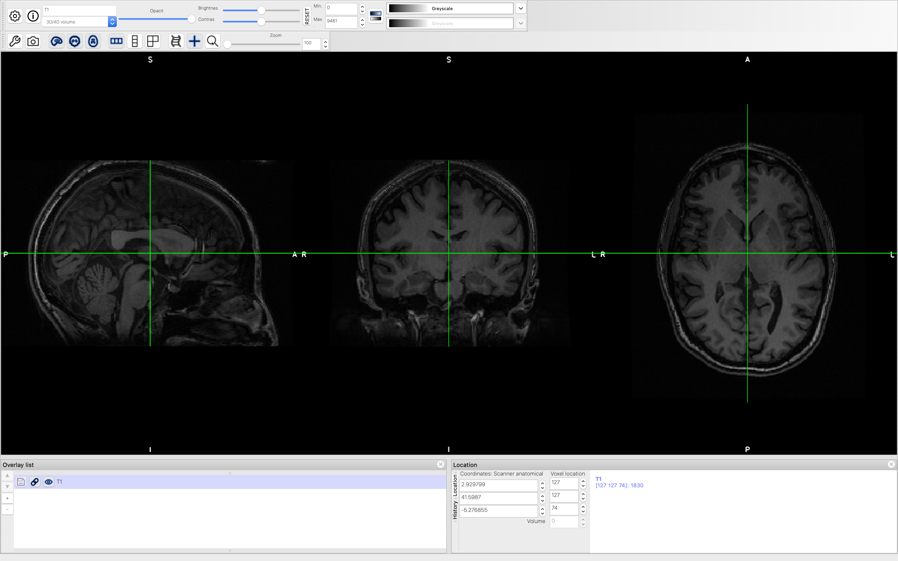
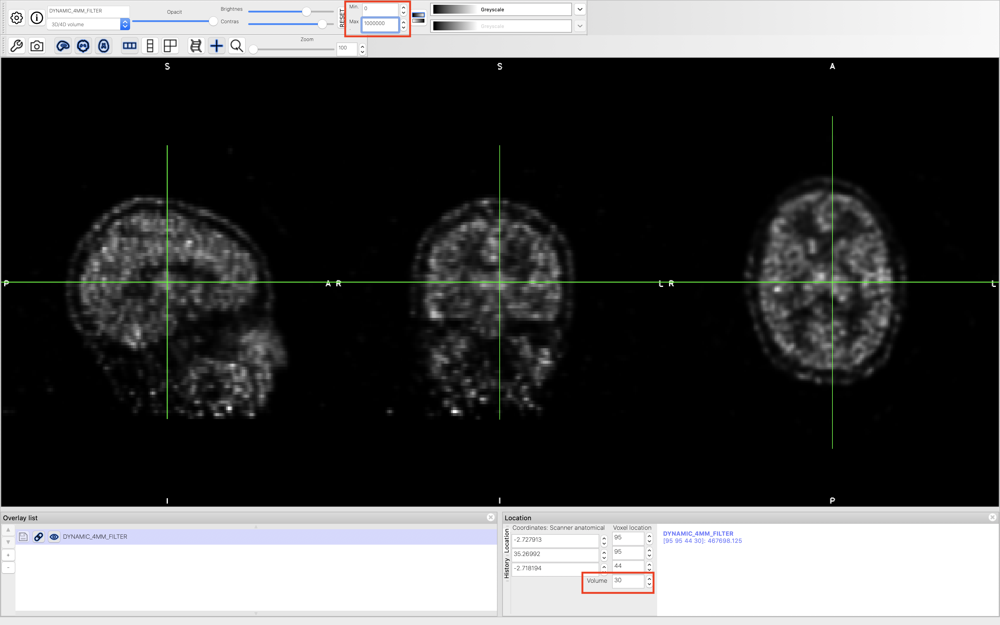

Data Preparation¶
Data Description¶
The sample dataset was acquired using a GE PET/MRI system. The dataset includes a T1 weighted structural image and several PET images. These files were exported directly from the scanner after image reconstruction.
Convert from DICOM to NifTI Format¶
We use the dcm2niix software to convert the DICOM files to NIfTI format. We only need to process the Dynamic PET with 4mm-filter images.
For the Dynamic PET with 4mm-filter image:
dcm2niix -o ./ -f DYNAMIC_4MM_FILTER -z y DYNAMIC_PET_YES_FILTER_4MM
Visualize the Images¶
We use FSLeyes to view the T1-wieghted structural and ASL images.
We can view the T1-wieghted structural image, which should look like the following:
For the Dynamic PET data, open the image and go to volume 30 and adjust the maximum display color to 1000000, it should look like the following:
